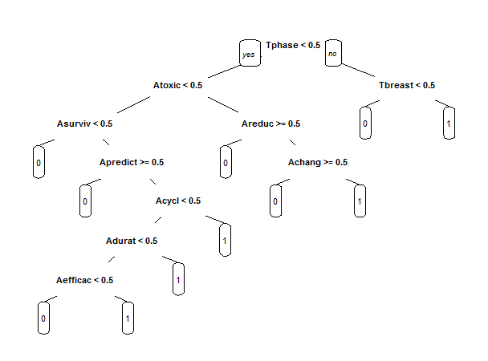
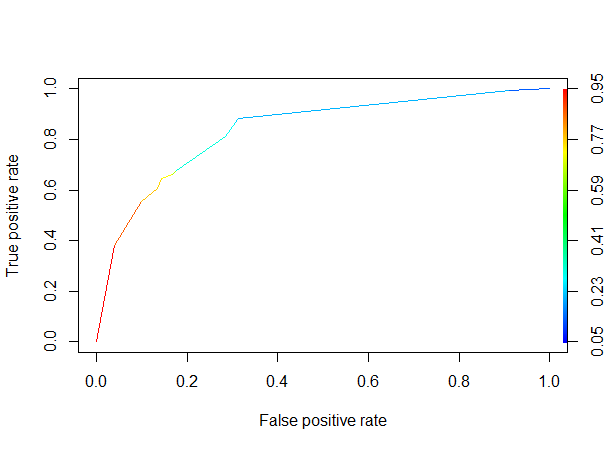

The medical literature is enormous. Pubmed, a database of medical publications maintained by the U.S. National Library of Medicine, has indexed over 23 million
medical publications. Further, the rate of medical publication has increased over time, and now there are nearly 1 million new publications in the field each
year, or more than one per minute.
The large size and fast-changing nature of the medical literature has increased the need for reviews, which search databases like Pubmed for papers on a particular
topic and then report results from the papers found. While such reviews are often performed manually, with multiple people reviewing each search result, this is
tedious and time consuming. In this problem, we will see how text analytics can be used to automate the process of information retrieval.
The dataset consists of the titles (variable title) and abstracts (variable abstract) of papers retrieved in a Pubmed search. Each search result is labeled with
whether the paper is a clinical trial testing a drug therapy for cancer (variable trial). These labels were obtained by two people reviewing each search result
and accessing the actual paper if necessary, as part of a literature review of clinical trials testing drug therapies for advanced and metastatic breast cancer.
Let's load clinical_trial.csv into a data frame called trials (remembering to add the argument stringsAsFactors=FALSE), and investigate the data frame with
summary() and str().
We can use R's string functions to learn more about the titles and abstracts of the located papers. The nchar() function counts the number of characters in a
piece of text. Using the nchar() function on the variables in the data frame, we can get some basic information.
The longest abstracy contains 3708 characters. 112 provided no search results. A decade of letrozole: FACE. is the observation with mimimum number of
characters in it.
max(nchar(trials$abstract))
table(nchar(trials$abstract)==0)
trials$title[which.min(nchar(trials$title))]
Because we have both title and abstract information for trials, we need to build two corpera instead of one. Name them corpusTitle and corpusAbstract.
Let's create the corpus:
library(tm)
corpusTitle = Corpus(VectorSource(trials$title))
corpusAbstract = Corpus(VectorSource(trials$abstract))
Converting text to lower letters:
corpusTitle = tm_map(corpusTitle, tolower)
corpusAbstract = tm_map(corpusAbstract, tolower)
Following lines convert corpus to a Plain Text Document
corpusTitle = tm_map(corpusTitle, PlainTextDocument)
corpusAbstract = tm_map(corpusAbstract, PlainTextDocument)
For removing punctuation:
corpusTitle = tm_map(corpusTitle, removePunctuation)
corpusAbstract = tm_map(corpusAbstract, removePunctuation)
Removing English language stopwords
corpusTitle = tm_map(corpusTitle, removeWords, stopwords("english"))
corpusAbstract = tm_map(corpusAbstract, removeWords, stopwords("english"))
Stemming the documents:
corpusTitle = tm_map(corpusTitle, stemDocument)
corpusAbstract = tm_map(corpusAbstract, stemDocument)
Building document term matrices
dtmTitle = DocumentTermMatrix(corpusTitle)
dtmAbstract = DocumentTermMatrix(corpusAbstract)
Let's limit dtmTitle and dtmAbstract to terms with sparseness of at most 95% (aka terms that appear in at least 5% of documents).
dtmTitle = removeSparseTerms(dtmTitle, 0.95)
dtmAbstract = removeSparseTerms(dtmAbstract, 0.95)
Converting document erm matrices to data frames
dtmTitle = as.data.frame(as.matrix(dtmTitle))
ncol(dtmTitle)
dtmAbstract = as.data.frame(as.matrix(dtmAbstract))
ncol(dtmAbstract)
There are 31 terms remained in dtmTitle and 335 in dtmAbstract after removing sparse terms. dtmAbstract has many more words because titles are so short,
a word needs to be very common to appear in 5% of titles. Because abstracts have many more words, a word can be much less common and still appear in 5% of
abstracts.
While abstracts may have wider vocabulary, this is a secondary effect. As we saw in the previous subsection, all papers have titles, but not all have abstracts.
Patient is the most frequent word stem across all the abstracts.
which.max(colSums(dtmAbstract))
We want to combine dtmTitle and dtmAbstract into a single data frame to make predictions.
However, some of the variables in these data frames have the same names. To fix this issue, run the following commands:
colnames(dtmTitle) = paste0("T", colnames(dtmTitle))
colnames(dtmAbstract) = paste0("A", colnames(dtmAbstract))
The first line pastes a T at the beginning of each column name for dtmTitle, which are the variable names. The second line does something similar for
the Abstract variables - it pastes an A at the beginning of each column name for dtmAbstract, which are the variable names.
Using cbind(), let's combine dtmTitle and dtmAbstract into a single data frame called dtm:
dtm = cbind(dtmTitle, dtmAbstract)
dtm$trial = trials$trial
ncol(dtm)
dtm contains 367 variables.
Now that we have prepared our data frame, it's time to split it into a training and testing set and to build regression models. Let's set the random seed to
144 and use the sample.split function from the caTools package to split dtm into data frames named "train" and "test", putting 70% of the data in the
training set.
set.seed(144)
spl = sample.split(dtm$trial, 0.7)
train = subset(dtm, spl == TRUE)
test = subset(dtm, spl == FALSE)
The accuracy of the baseline model on the training set is 0.5606759.
Just as in any binary classification problem, the naive baseline always predicts the most common class. From table(train$trial), we see 730 training set results
were not trials, and 572 were trials. Therefore, the naive baseline always predicts a result is not a trial, yielding accuracy of 730/(730+572).
Let's build a CART model called trialCART, using all the independent variables in the training set to train the model, and then plot the CART model.
We will just use the default parameters to build the model. Remember to add the method="class" argument, since this is a classification problem.
Tphase is the name of the first variable the model split on. The first split checks whether or not Tphase is less than 0.5. This can be accomplished with:
trialCART = rpart(trial~., data=train, method="class")
prp(trialCART)

0.8718861 is the maximum prediction on the training set. The training set predictions can be obtained and summarized with the following commands:
pred = predict(trialCART)
predTrain = pred[,2]
max(predTrain)
Without running the analysis, we can expect the maximum predicted probability will not differ in the testing set, Because the CART tree assigns the same
predicted probability to each leaf node and there are a small number of leaf nodes compared to data points.
We can compare the predictions with threshold 0.5 to the true results in the training set with:
table(train$trial, predTrain >= 0.5)
We conclude that the model has training set accuracy (631+441)/(631+441+99+131)= 0.8233487, sensitivity 441/(441+131)= 0.770979 and specificity
631/(631+99)=0.8643836.
Evaluating the model on the testing set
Let's evaluate the CART model on the testing set using the predict function and creating a vector of predicted probabilities predTest. The testing set
predictions can be obtained and compared to the true outcomes with:
predTest = predict(trialCART, newdata=test)[,2]
table(test$trial, predTest >= 0.5)
From this, we read that the testing set accuracy is (261+162)/(261+162+83+52)= 0.7580645. The AUC can be determined using the following code:
library(ROCR)
predROCR = prediction(predTest, test$trial)
perfROCR = performance(predROCR, "tpr", "fpr")
plot(perfROCR, colorize=TRUE)
performance(predROCR, "auc")@y.values
AUC value is:0.8371063.
